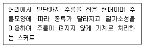
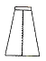
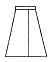
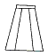
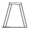
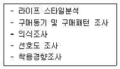
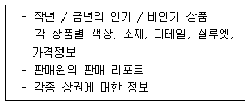

패션머천다이징산업기사 (2007-08-05 기출문제)
1과목: 패션마케팅
1. 국내 패션산업의 발전단계에 대한 설명으로 옳은 것은?
- 1960년대는 대기업이 기성복 시장에 진출하는 등의 질적 추구시대를 맞이하였다.
- 1990년대 국내 패션산업은 성숙기에 들어가면서 감성 의류에 대한 욕구시대를 맞게 되었다.
- 1980년대 들어서는 1986년 아시안게임, 1988년 올림픽 개최와 국민소득 향상으로 소비자들의 욕구가 다양화됨에 따라서 양적 추구시대를 맞이하였다.
- 1970년대는 석유파동과 선진국의 수입규제 등의 어려움이 있었으나, 중소의류전문업체들이 기성복 시장에 진출하는 등 꾸준한 성장세를 보였다.
(정답률: 알수없음)

2. 패션상품이 유행이라는 큰 흐름을 동일하게 지향하면서 각 기업마다 차별화를 추구하기 때문에 유사성과 독특성을 함께 가질 수밖에 없는 대표적인 경쟁형태는?
- 독점(monopoly)
- 과점(oligopoly)
- 독점적 경쟁(monopolistic competition)
- 순수경쟁(pure competition)
(정답률: 알수없음)
3. 다음 중 패션 머천다이징의 기능이 아닌 것은?
- 인사정책의 수립
- 수요예측의 수립
- 상품정책의 수립
- 판매정책의 수립
(정답률: 알수없음)
4. 손익분기점(손익분기 판매량) 산출공식으로 옳은 것은?
- 손익분기점 = 고정비 / (가격 - 단위당 변동비)
- 손익분기점 = 고정비 / (단위당 변동비 - 가격)
- 손익분기점 = (가격 - 단위당 변동비) / 고정비
- 손익분기점 = (단위당 변동비 - 가격) / 고정비
(정답률: 알수없음)
5. 패션머천다이징 시스템 중 4P's mix 전략, B.I 작업, 브랜드 이미지 설정 및 시즌 컨셉 설정을 하는 단계는?
- 마케팅시스템 환경분석 단계
- 머천다이징 컨셉 설정 단계
- 표적시장 설정 단계
- 판매 및 유통 단계
(정답률: 알수없음)
6. 패션머천다이저의 업무수행타입에 대한 설명으로 틀린 것은?
- 상인형 머천다이저 - 상품기획을 하기보다는 상품을 싸게 구매하여 도매상이나 소매상에 높은 가격으로 팔 수 있는가에 관심을 갖는 유형
- 계수관리형 머천다이저 - 머천다이저로서의 업적달성을 판매예산, 재고예산 등 수치에 두는 유형
- 전문관리형 머천다이저 - 상품기획에서 매장전개 및 광고에 이르기까지 마케팅 활동을 체계적으로 추진하는 유형
- 고감도형 머천다이저 - 소비자가 원하는 것보다 자신의 창의성을 우선시하는 유형
(정답률: 알수없음)
7. 상품이나 패션에 관한 전문지식을 가지고 소비사장의 동향을 정확하게 파악하여 적절한 상품의 구매를 담당하는 패션산업부분의 스페셜리스트는?
- 디스플레이 디자이너(display designer)
- 스타일리스트(stylist)
- 패션 바이어(fashion buyer)
- 패션 컨버터(fashion converter)
(정답률: 알수없음)
8. 패션 머천다이징 과정이 바르게 나열된 것은?
- 발상단계 → 개발단계 → 아이디어 평가단계 → 제품화단계 → 시장도입단계
- 발상단계 → 아이디어 평가단계 → 제품화단계 → 개발단계 → 시장도입단계
- 발상단계 → 아이디어 평가단계 → 개발단계 → 시장 도입단계 → 제품화단계
- 발상단계 → 아이디어 평가단계 → 개발단계 → 제품화단계 → 시장도입단계
(정답률: 알수없음)
9. 머천다이징에서 적절한 상품의 개념에 맞지 않는 것은?
- 상품의 사이즈
- 상품의 색상
- 상품의 스타일
- 상품의 디스플레이
(정답률: 알수없음)
10. 디자인 컨셉을 설정할 때 고려하지 않는 것은?
- 색상
- 소재
- 원가
- 디테일
(정답률: 알수없음)
11. 패션 홍보의 수단 중 홍보 담당자가 매체의 관심을 얻기 위해 자사 관련 신상품이나 행사에 대한 정보를 1~2페이지로 요약한 것은?
- 디자이너나 패션업체에 대한 자서전적 소개
- 보도자료
- 인터뷰
- DM(Direct Mail)
(정답률: 알수없음)
12. 머천다이징 프로세스에 관한 내용 중 생산기획의 업무에 속하지 않는 것은?
- 수주
- 원부자재 구매
- 패턴제작
- 마킹
(정답률: 알수없음)
13. 다음 중 상품의 낮은 가격이 점포의 가장 큰 특성인 업태가 아닌 것은?
- 프라이스 클럽(price club)
- 아울렛
- 편의점
- 하이퍼 마켓(hyper market)
(정답률: 알수없음)
14. 패션 기업의 가격전략 중 시장침투 가격전략에 해당되는 경우는?
- 생산량이 축적될수록 제조 원가와 유통비용이 빨리 하락될 때
- 제품 가격이 비싸면 제품 품질도 높을 것으로 소비자가 생각될 때
- 고가격에도 상당수의 소비자가 그 제품을 구매하고자 할 때
- 초기 고가격에도 불구하고 당분간 경쟁사의 진입이 어려울 때
(정답률: 알수없음)
15. 패션 머천다이저가 상품 구색 계획 업무를 할 때 주요 원리로 고려하는 사항 중 틀린 것은?
- 상품 구색은 경영 의사보다는 소비자 보호 정책과 일치하여야 한다.
- 이윤은 상품에 대한 고객 만족의 결과이다.
- 상품 구색은 가격, 색상, 사이즈, 실루엣이 적절하게 조합되어야 한다.
- 제품에 대한 이윤 계산은 체계적이고 조직적인 계획의 결과이다.
(정답률: 알수없음)
16. 패션상품의 판매에서 리테일 머천다이징이 중요시되는 이유로 옳은 것은?
- 패션상퓸은 상품회전률이 빠르기 때문이다.
- 패션상품은 가격할인율이 낮기 때문이다.
- 패션상품은 시한성이 낮기 때문이다.
- 패션상품은 계절의 변화에 영향을 받지 않기 때문이다.
(정답률: 알수없음)
17. 소비자의 의식과 라이프스타일, 소비패턴, 착용 경향 등을 분석하는 패션 머천다이저의 업무에 해당되는 것은?
- 상품기획 업무
- 생산지원 업무
- 정보분석 업무
- 판매 및 판매촉진 지원 업무
(정답률: 알수없음)
18. 고객층과 상품구성의 폭과 깊이에 대한 설명으로 옳은 것은?
- Prestige - 상품의 품질이 중요 요인이고, 폭이 넓고 깊이도 깊음
- Better - 상품의 가격이 중요 요인이고, 폭은 넓고 깊이는 얕음
- Volume - 상품의 양이 중요 요인이고, 폭이 넓고 깊이도 깊음
- Budget - 상품의 양이 중요 요인이고, 폭은 좁고 깊이가 깊음
(정답률: 알수없음)
19. 소비자들이 제품의 성과가 어느 정도 기대에 미치지 못하는 경우에는 기대와 별 차이가 없는 것으로 지각하여 스스로 만족하여 하지만 제품의 성과가 기대에 많이 어긋나는 경우에는 기애와 제품의 성과간의 불일치를 확대 하여 불만족이 가중되는 효과에 해당하는 것은?
- 동화효과
- 대조효과
- 기대 - 성과 일치효과
- 동화 - 대조 효과
(정답률: 알수없음)
20. 패션기업의 마케팅 활동 중 예견형 마케팅에 대한 설명으로 틀린 것은?
- 고객의 욕구에 비해 시장진입 속도가 너무 빠르거나 늦어진다거나 또는 예측이 완전히 빗나가는 경우 위험도가 높아질 수 있다.
- 고객에게 발생중이거나 아직 잠재되어 있는 욕구를 미리 파악하여 마케팅을 행하는 것이다.
- 유행에 영향을 받는 패션제품의 마케팅 활동이 주로 예견형에 속한다.
- 고객이 분명한 욕구가 존재하고 기업들이 그것을 분별하여 실행 가능한 해결책을 마련했을 때의 접근 방식이다.
(정답률: 알수없음)
2과목: 패션소재기획
21. 편성물의 특징이 아닌 것은?
- 함기량이 많아 보온성이 높다.
- 마찰에 매우 강해 필링이 잘 생기지 않는다.
- 한 코(loop)가 끊어지면 계속 풀리는 현상이 있다.
- 신축성이 커서 활동하기 편하고 구겨지지 않는다.
(정답률: 알수없음)
22. 다음 중 실을 사용하여 만든 옷감이 아닌 것은?
- 편성물
- 펠트
- 레이스
- 직물
(정답률: 알수없음)
23. 부드러운 무광택 표면을 섬유가 일어나도록 피혁 안쪽을 기모하여 만든 것은?
- 톱 그레인(top grain)
- 언더코트(undercoat)
- 그래이징(glazing)
- 스웨드(suede)
(정답률: 알수없음)
24. 섬유제품의 관리에 있어 세탁 취급표시에 관한 용어가 아닌 것은?
- 세탁기 세탁법
- 건조법
- 다림질
- 대전성
(정답률: 알수없음)
25. 다음 중 소재기획 프로세스에 해당되지 않는 것은?
- 패션정보 분석
- 소재기획 컨셉
- 홍보매체 결정
- Market Need 조사
(정답률: 알수없음)
26. 다음 중 새틴(satin) 소재의 감성분류에 속하는 것은?
- 두꺼운(thick)
- 딱딱한(hard)
- 젖은(wet)
- 마른(dry)
(정답률: 알수없음)
27. 정부 공인기관이 의류제품의 품질향상과 소비자 보호 및 건전한 유통질서 확립을 위하여 우수 생산업체를 선정 하여 원부자재의 특성시험과 완제품의 외관검사를 실시 하여 우수한 상품에 부착하는 인증제도는?
- 품질보증마크 (Q마크)
- 중소기업 우수제품 마크
- 에콜로지 마크
- 굳 헬스(Good Health) 마크
(정답률: 알수없음)
28. 다음 중 소재기획을 전문으로 하지만 소재생산시설을 직접 갖추지 않으면서 패션소재를 만들어 의류업체에 공급하는 패션 스페셜리스트는?
- 직물 디자이너
- 패션 머천다이저
- 직물 컨버터
- 코디네이터
(정답률: 알수없음)
29. 투습방수성이 필요한 고성능 스포츠웨어에 적합한 가공은?
- 오팔 가공(opal finish)
- 라미네이트 가공(laminate finish)
- 스퍼트 가공(sputter finish)
- 폴리스 가공(plisse finish)
(정답률: 알수없음)
30. 다음 중 융점(融點)이 가장 높은 섬유는?
- 아마(linen)
- 양모(wool)
- 모드 아크릴(modacrylic)
- 아라미드(aramid)
(정답률: 알수없음)
31. 번수 52수 정도의 소모사를 2합연한 것을 다시 한 올과 합한 실을 경사와 위사로 사용하여 제직하여 평직으로 짠 소모직물에만 사용되는 직물은?
- 포럴(poral)
- 홈스펀(homespun)
- 멜턴(melton)
- 색스니(saxony)
(정답률: 알수없음)
32. 합연의 정도에 따른 실의 종류 중 패션 의류소재로 가장 적당히 사용되는 실로 나열된 것은?
- 단사, 합연사, 코드사
- 단사, 합연사, 코드사, 케이블
- 단사, 합연사, 코드사, 케이블, 로프
- 단사, 합연사, 코드사, 케이블, 로프, 호저
(정답률: 알수없음)
33. 소재기획을 위한 검토항목 중 필수적으로 고려해야 될 사항이 아닌 것은?
- 소재와 스타일의 관계
- 소재의 생산, 납기 관계
- 소재의 품질관리 관계
- 소재의 봉합검사 관계
(정답률: 알수없음)
34. 헤어섬유 중 강도가 약하여 주로 소품에 많이 사용되는 패시미나(pashimina)는 헤어(hair) 소재 중 어느 종류의 섬유인가?
- 모헤어(mohair)
- 알파카(alpaca)
- 캐시미어(cashmere)
- 앙고라(angora)
(정답률: 알수없음)
35. 진즈웨어(jeans wear)의 워싱 가공방법 중 백화현상이 많이 나타나 차가운 질감을 부여하는 것은?
- 윈 워싱(win washing)
- 스톤 워싱(stone washing)
- 블리치 아웃 워싱(bleach-out washing)
- 샌드 워싱(sand washing)
(정답률: 알수없음)
36. 다음 중 비스코스 레이온의 건강도(乾强度), 습윤강도로 옳은 것은?
- 1.0 ~ 1.5 g/d, 1.1 ~ 1.9 g/d
- 1.7 ~ 2.3 g/d, 0.8 ~ 1.2 g/d
- 3.5 ~ 4.0 g/d, 2.3 ~ 2.8 g/d
- 4.3 ~ 4.8 g/d, 3.9 ~ 4.3 g/d
(정답률: 알수없음)
37. 직물의 3원조직에 대한 설명으로 틀린 것은?
- 평직은 수자직보다 제직이 어렵다.
- 능직은 수자직보다 강직하다.
- 수자직은 능직보다 광택이 좋다.
- 수자직은 평직보다 마찰에 약하다.
(정답률: 알수없음)
38. 소재의 감성용어와 특징이 바르게 연결되어 있는 것은?
- 러프(rough) - 매끈한, 평평한
- 라이트(light) - 두꺼운, 부피있는
- 드라이(dry) - 건조한, 마른
- 웨트(wet) - 실키 터치, 부드러운
(정답률: 알수없음)
39. 다음 중 최근에 개발되어 각광을 받는 신소재가 아닌 것은?
- 라이크라 섬유
- 전자파 차단 섬유
- 자외선 차단 섬유
- 축열 보온 섬유
(정답률: 알수없음)
40. 탄성이 있는 물질에 공기를 혼합하여 만든 것으로 고무와 폴리우레탄으로 가장 흔히 사용하는 것은?
- 폼(foam)
- 펠트(felt)
- 라미네이트 포(laminated fabric)
- 부직포(non woven fabric)
(정답률: 알수없음)
3과목: 유통관리 및 광고
41. 패션의 수용정도에 의한 상품 분류의 설명으로 틀린 것은?
- 트렌드 상품, 뉴베이직 상품, 베이직 상품으로 분류하기도 한다.
- 베이직 상품은 누구나 기본적으로 갖추고 있는 상품군 이다.
- 뉴베이직은 트렌드와는 별로 상관없는 상품군이다.
- 트렌드 상품은 전략적인 상품으로 보여주기 위한 상품군이다.
(정답률: 알수없음)
42. 홍보의 특성에 대한 설명으로 틀린 것은?
- 후원장소나 프로그램에 회사 또는 상표를 삽입하거나 협찬함으로써 상표인지도를 높인다.
- 잡지홍보는 상당한 효과가 있으며, 광범위한 지역성 및 시각적 제한을 커버할 수 있다.
- 기업의 로고, 문서류, 표식, 유니폼 등의 일체성 매체에 의하여 이루어 질 수 있다.
- 기업, 제품, 직원에 대한 흥미로운 뉴스거리를 찾아내거나 만들어 내는 것도 홍보수단이 될 수 있다.
(정답률: 알수없음)
43. 다음 중 바이어가 상품을 선정할 때 고려해야 할 요소가 아닌 것은?
- 가격
- 상품특성
- 판매시기
- 판매방법
(정답률: 알수없음)
44. 상품구성의 설명으로 틀린 것은?
- 상품구성의 깊이는 어떤 특정상품의 종류 내에서 브랜드나 스타일 수를 의미한다.
- 상품구성의 폭은 소비자에게 제공하는 각 품목의 양을 의미한다.
- 소품종 다량구성은 좁고 깊은 상품구성을 의미한다.
- 다품종 소량구성은 넓고 얕은 상품구성을 의미한다.
(정답률: 알수없음)
45. 리테일 머천다이저의 역할 중 구매처 선정시 고려해야 될 적합한 요소가 아닌 것은?
- 상품수준
- 구매습관
- 상품새발
- 품질확보
(정답률: 알수없음)
46. 비용을 들이지 않고 기업이나 제품에 관한 정보를 매체의 기사나 뉴스를 통해 알림으로써 소비자 반응을 자극 하는 것은?
- 홍보
- 광고
- 칼럼
- 저널
(정답률: 알수없음)
47. 다음 중 패션유통의 개념에 해당되지 않는 것은?
- 패션상품이 최종 소비자에게 이르는 과정
- 패션상품을 기획하고 제조하여 개발하는 과정
- 패션상품의 주문, 촉진, 물류 등과 같은 유통기능과 관련된 활동
- 매매거래에 의해 패션상품의 소유권이 이동하는 과정
(정답률: 알수없음)
48. 패션제품이 트럭과 같은 수송기관을 통해 제조회사의 창고에서 도매업자, 소매업자의 중간상을 거쳐 운반되는 것은?
- 물류
- 정보
- 상류
- 택배
(정답률: 알수없음)
49. 최근 온라인판매나 TV, 홈쇼핑 등이 급부상하며 유통의 핵으로 떠오르고 있다. 이처럼 생산자가 직접 소비자에게 판매하는 유통경로 구조는?
- 간접 마케팅 경로
- 전통 마케팅 경로
- 직접 마케팅 경로
- 중간 도매상 경로
(정답률: 알수없음)
50. 광고매체의 분류 중 4대 대중매체가 아닌 것은?
- 라디오
- 신문
- 우편
- 잡지
(정답률: 알수없음)
51. 디스플레이의 전개수단에 대한 설명 중 옳은 것은?
- 상품 - 디스플레이의 가장 중요한 요소로 고객이 구매하고자 하는 디자인, 컬러, 소재, 가격, 스타일을 고려하여 이루어진다.
- 보조도구 - 마네킹이나 바디(body)와 같은 기능적인 소도구만을 포함한다.
- 색상 - 매장 내의 색상은 고객의 눈에 가장 먼저 들어 오는 것으로 상품기획 시 고려된 상품색상의 조화보다는 계절이나 패션 트렌드를 반영한 배색효과를 우선 중시해야 한다.
- 표시판과 쇼카드 - 정보를 주는 기능이 강하지만 매장 환경이 무질서해지므로 매장에서의 사용을 자제해야 한다.
(정답률: 알수없음)
52. 광고매체 중 TV의 특징이 아닌 것은?
- 시청각 매체로 설득력이 강하다.
- 실물의 실제 재연이 가능하다.
- 광고가격이 비싸다.
- 제품에 대한 충분한 설명이 가능하다.
(정답률: 알수없음)
53. 다음 중 사입기획에서 상품구매 계획을 수립할 때 고려해야 할 사항으로만 나열된 것은?
- 재무기획, 상품구성기획
- 상품구성기획, 재고관리기획
- 재고관리기획, 영업전략기획
- 영업전략기획, 재무기획
(정답률: 알수없음)
54. 다음 중 패션소매점 매장구성에 대한 설명으로 옳은 것은?
- 판매단가가 높은 상품은 매장 앞쪽에 배치한다.
- 코디네이트 되는 아이템은 분산시켜 배치한다.
- 시즌의 신선도를 느끼게 하는 상품은 앞쪽에 배치한다.
- 판매기간이 긴 베이직 아이템은 매장 앞쪽에 배치한다.
(정답률: 알수없음)
55. 최적인 재고상태를 유지, 관리하기 위한 재고관리에서 결정해야 할 사항이 아닌 것은?
- 주문시기와 주문량
- 재고량과 재고감소율
- 판매부진 요인 분석과 해결
- 히트 상품 발견 및 판매적중률 향상
(정답률: 알수없음)
56. 디스플레이의 전개수단 중 점포의 전체적인 이미지를 조절하고, 고객들이 상품을 쉽게 볼 수 있도록 하며, 색상과 합해져서 디스플레이의 분위기를 좌우하는 것은?
- 상품
- 배경
- 조명
- 소도구
(정답률: 알수없음)
57. 다음 중 패션 이미지에 의한 상품분류가 아닌 것은?
- 팝 캐주얼(pop casual)
- 페미닌(feminine)
- 스포티 엘레강스(sporty elegance)
- 캐릭터 마인드(character mind)
(정답률: 알수없음)
58. 기업이나 소매점의 수준 향상을 목적으로 하며, 파는 상품보다는 보여주는 상품의 개념으로 고급품, 초현대적 상품 등이 속하는 상품은?
- 중점상품
- 전략상품
- 보완상품
- 재고상품
(정답률: 알수없음)
59. 재고상품 중 러닝 스톡(running stock) 에 대한 설명으로 옳은 것은?
- 활발하게 잘 팔리는 상품
- 비교적 잘 팔리는 상품
- 거의 움직이지 않는 상품
- 전혀 움직이지 않고 창고에 들어간 상품
(정답률: 알수없음)
60. 다음 중 어패럴 머천다이징에서 최종 소비자에게 제공 하는 계획과 활동에 포함되는 5R에 포함되지 않는 것은?
- 적절한 상품(right product)
- 적절한 양(right amount)
- 적절한 시기(right time)
- 적절한 판매촉진(right promotion)
(정답률: 알수없음)
4과목: 패션디자인론 및 의복구성학
61. 패션주기 중 상승기의 현상으로 옳은 것은?
- 상승기의 패션은 하이패션이라고 한다.
- 유행하는 스타일의 두드러진 특징을 적절하게 변화시킨다.
- 소매업자는 가격을 내리고 새로운 룩을 준비한다.
- 가격이 다양하여 대부분의 사람이 살 수 있다.
(정답률: 알수없음)
62. 패션트렌드 예측에 관한 설명으로 틀린 것은?
- 생산자와 소매업자는 패션 트렌드를 예측하기 위해 과거의 패션변동을 분석한다.
- 고객이 될 가능성이 있는 사람들의 라이프스타일과 경제적 지위를 잘 알아야 한다.
- 패션예측이 공표된 후에는 패션에 영향력을 미치는 새로운 요인은 배제해야 한다.
- 스타일 번호, 직물, 사이즈, 색상에 관한 판매수치의 파악이 예측을 가능하게 한다.
(정답률: 알수없음)
63. 150cm의 폭 옷감으로 프린세스 라인이 들어간 slim한 실루엣의 긴 소매 원피스 드레스를 재단할 때 옷감량 계산법으로 가장 적합한 것은?
- 옷길이 + 소매길이 + 시접(10 ~ 15cm)
- (옷길이 X 2) + 소매길이 + 시접(12 ~ 16cm)
- (옷길이 X 1.2) + 소매길이 + 시접(10 ~ 15cm)
- (옷길이 X 2) + 시접(12 ~ 16cm)
(정답률: 알수없음)
64. 다음 재봉바늘 중 가장 굵은 것은?
- 16호
- 14호
- 11호
- 9호
(정답률: 알수없음)
65. 패션 컬러 코디네이션에서 흔히 사용되는 것으로, 동일 또는 유사색상의 조합에서 톤의 변화를 살린 배색은?
- 톤 인 톤(tone in tone) 배색
- 그라데이션(gradation) 배색
- 톤 온 톤(tone on tone)
- 콘트라스트(contrast) 배색
(정답률: 알수없음)
66. 다음 안감 직물 중 안감으로 가장 많이 사용되며, 경사는 생사 2가닥을 합연하고 위사는 꼬임이 적은 생사의 감연사로 된 실의 밀도가 큰 직물은?
- 태피터(taffeta)
- 크레이프(crepe)
- 슬리크(sleek)
- 알파카(alpaca)
(정답률: 알수없음)
67. 패션산업의 특징과 가장 관계가 먼 것은?
- 정보산업
- 감각산업
- 지식 집약산업
- 생산자 지향산업
(정답률: 알수없음)
68. 의상 디자인에서 사용되는 디자인 요소에 해당되지 않는 것은?
- 선
- 재질
- 색채
- 빛
(정답률: 알수없음)
69. 칼라 중 뒷목 부위에서 세워진(stand) 부분이 없는 칼라는?
- 테일러 칼라(tailored collar)
- 셔츠 칼라(shirt collar)
- 스포츠 칼라(sports collar)
- 플랫 칼라(flat collar)
(정답률: 알수없음)
70. 다음 설명에 해당되는 스커트의 명칭은?

- 스트레이트 스커트(straight skirts)
- 플레어 스커트(flared skirts)
- 플리츠 스커트(pleats skirts)
- 고어드 스커트(gored skirts)
(정답률: 알수없음)
71. 모, 견, 레이스와 같이 룰렛이나 재단 주걱(헤라) 등으로 표시하기 어려운 옷감을 두 겹으로 겹쳐 놓고 재단했을 때 완성선 표시를 하는 손바느질은?
- 실표뜨기
- 팔자뜨기
- 공그르기
- 감치기
(정답률: 알수없음)
72. 다음 그림 중 세로선에 의한 착시현상으로 세로 효과가 가장 큰 것은? (단, 그림의 폭과 길이는 동일하다)




(정답률: 알수없음)
73. 상체가 숙인 체형(굴신체형)이나 젖힌 체형(반신 체형)의 경우에는 보통 체형과 달리 특히 어느 부위의 비례가 차이가 많이 나는가?
- 앞가슴둘레, 뒷가슴둘레
- 앞허리둘레, 뒤허리둘레
- 앞목둘레, 허리둘레
- 앞길이, 등길이
(정답률: 알수없음)
74. 재봉기의 분류방법 중 스티치 연결형태에 따른 분류표시 기호에서 ‘L’이 뜻하는 것은?
- 본봉
- 단환봉
- 이중환봉
- 주변감침봉
(정답률: 알수없음)
75. 다음 중 펑크(punk) 스타일과 관계가 없는 것은?
- 개 목걸이, 면도칼 등의 액세서리
- 초미니스커트, 플라스틱제의 팬츠
- 프랑스 파리에서 발생, 풋내기의 의미
- 기분 나쁜 화장
(정답률: 알수없음)
76. 장식바느질 중 개더를 잡아 장식하고자 하는 위치에 봉제하는 부드러운 느낌의 장식은?
- 프릴(frill)
- 플라운스(flounce)
- 보우(bow)
- 셔링(shirring)
(정답률: 알수없음)
77. 한 가지 색상으로부터 파생된 밝은, 어두운, 선명한, 탁한 색들로 구성된 배색으로 가장 알맞은 것은?
- 인접색상 배색
- 보색 배색
- 동일색상 배색
- 삼각 배색
(정답률: 알수없음)
78. 먼셀의 표색계에 대한 설명으로 옳은 것은?
- 무채색을 0으로 하고 순색까지의 사이를 감각적으로 균등하게 분할해서 채도단계를 만든다.
- 24색상 외에 실용상 6색을 첨가하여 30색상으로도 하고 있다.
- 이상적인 검정을 10, 이상적인 흰색을 0으로 하고 그 사이를 감각적으로 같은 간격이 되도록 분할해서 11단계로 한다.
- 각 색의 표시는 색상, 채도, 명도의 순으로 표시한다.
(정답률: 알수없음)
79. 실의 굵기를 나타내는 항중식의 단위로 1파운드와 840 야드에 근거를 두는 번수는?
- 영국식 면사번수
- 데니어(denier)번수
- 공통식 번수
- 텍스(tex)번수
(정답률: 알수없음)
80. 소매 붙임선이 목둘레선부터 A.H 아래로 연결되어 이루어진 소매로 어깨의 관절부위를 피해 체표상의 근육이 움푹 패인 곳을 솔기선이 지나도록 한 소매는?
- 세트 인 슬리브(set in sleeve)
- 기모노 슬리브(kimono sleeve)
- 프렌치 슬리브(french sleeve)
- 래글런 슬리브(raglan sleeve)
(정답률: 알수없음)
5과목: 패션정보분석
81. 소재정보에 관한 설명으로 틀린 것은?
- 섬유의 가공방법을 분석한다.
- 스와치 샘플을 직접 판단할 필요가 없다.
- 섬유의 종류, 조직상의 특성으로 분석한다.
- 섬유의 시각 및 촉각에 의한 질감 두께 등을 조사한다.
(정답률: 알수없음)
82. 소비자 정보를 위한 조사내용이 아닌 것은?
- 고객층의 라이프스타일 분석
- 정기 ㆍ 비정기적인 거리 패션 조사
- 광고 효과 조사
- 매장별 판매실적 조사
(정답률: 알수없음)
83. 다음 중 정보의 수집도구와 가장 거리가 먼 것은?
- 비디오(video)
- 퍼스널 컴퓨터(personal computer)
- 카드 케이스(card case)
- 녹음기(recorder)
(정답률: 알수없음)
84. 정보원의 종류 구분이 틀린 것은?
- 활자미디어 정보원 - 신문, 잡지 등
- 인적 정보원 - 전화, 팩스 등
- 컴퓨터통신 정보원 - 인터넷, 데이터 베이스 등
- 전파미디어 정보원 - TV, 라디오 등
(정답률: 알수없음)
85. 상품의 역할에 따른 패션상품 분류에 적합하지 않은 것은?
- 트렌드 상품
- 뉴베이직 상품
- 베이직 상품
- 스포츠 상품
(정답률: 알수없음)
86. 패션 기업이 핫 스팟(hot spot) 을 알고자 할 때 이용할 수 있는 가장 적합한 정보의 유형은?
- 경쟁사 정보
- 패션 트렌드 정보
- 패션관련 산업 정보
- 인구통계학적 환경 정보
(정답률: 알수없음)
87. 상권 조사에 대한 설명으로 틀린 것은?
- 상권은 특정의 매장, 상점가, 쇼핑센터 등에서 구매하는 소비자의 지리적 범위를 의미한다.
- 상권의 범위는 입지조건, 시설 규모, 취급 상품 등의 특성에 따라 달라진다.
- 경쟁 상황 하에 있는 1차 상권과 점포 특성에 의한 2차 상권으로 분류된다.
- 상권 조사를 할 때 상품 분야별 특성을 파악하고 상점수와 그 비율을 분석한다.
(정답률: 알수없음)
88. 다수의 상품 및 서비스를 사용하는 패턴으로 소비자의 라이프스타일을 분석하는 방법은?
- 행동 라이프스타일 분석법
- 태도영역 분석법
- 사회경향 분석법
- 사이코그래픽 분석법
(정답률: 알수없음)
89. 패션에 영향을 미치는 여러 요인을 분석하여 패션 경향을 몇 개의 테마로 나누고 패션의 흐름을 분류하는 것은?
- 패션 컨셉
- 패션 테마
- 패션 트렌드
- 패션 인플루언스
(정답률: 알수없음)
90. 현대 패션 산업에 있어서 정보의 중요성이 부각되는 요인이 아닌 것은?
- 다양한 매체의 발달
- 라이프사이클의 단축화 현상
- 상품의 고부가 가치화 현상
- 소재 및 지불수단의 다양화 현상
(정답률: 알수없음)
91. 한 개인이 살아가는 방식으로서, 보통 개인의 활동 (activity), 관심(interest), 의견(opinion)을 의미하는 A.I.O. 로 조사하는 것은?
- 패션 구매 패턴
- 성격과 자아개념
- 라이프스타일
- 소비자 행동
(정답률: 알수없음)
92. 패션 트렌드 분석요소가 아닌 것은?
- 스타일의 경향
- 패션테마 경향
- 색채, 무늬 경향
- VMD 계획의 경향
(정답률: 알수없음)
93. 다음 정보는 어떤 정보에 속하는 것인가?

- 시장정보
- 소비자 정보
- 패션 정보
- 기업환경 정보
(정답률: 알수없음)
94. 다음 정보들로 분석하려는 것은?

- 경쟁 브랜드 정보
- 패션 트렌드 정보
- 소매점 정보
- 라이프스타일 정보
(정답률: 알수없음)
95. 다음의 색채 정보원 중 국내 정보에 속하지 않는 것은?
- 자사제품의 판매결과에서 얻은 색채 경향
- 쁘레따뽀르떼 컬렉션의 색채 경향
- 타사 제품의 색채 정보
- 각 염색공장에서 집계한 색채 정보
(정답률: 알수없음)
96. 일반적으로 수집된 정보를 토대로 하여 그 미래를 예측하는 방법이 아닌 것은?
- 라이프사이클 예측법
- 시계열 예측법
- 시각화 예측법
- 수요계층 예측법
(정답률: 알수없음)
97. 스타일 경향분석에 대한 내용 중 틀린 것은?
- 가장 포인트가 될 수 있는 네크라인, 칼라, 슬리브, 커프스 등의 경향을 분석한다.
- 수집, 정리, 분석은 시각으로 파악할 수 있는 사진이나 일러스트에 의한 방법이 적당하다.
- 일정한 기준을 두고 모집단을 선정하여 계속적으로 수집할 필요가 있다.
- 그래프에 의한 분석방법과 사진의 그룹핑에 의한 도해 분석방법이 있다.
(정답률: 알수없음)
98. 경쟁사나 선진기업이 무엇을, 왜, 어떻게 하는지를 분석함으로써 기업내부의 변화를 추구하는 혁신적인 활동은?
- 벤치마킹(benchmarking)
- 아웃소싱(outsourcing)
- 퍼미션 마케팅(permission marketing)
- 니치 마켓(niche market)
(정답률: 알수없음)
99. 생활의 장으로 본 현대인의 4대 생활공간 (life stage) 즁 관혼상제 등에 해당되는 용어로 적합한 것은?
- 시티 라이프(city life)
- 홈 라이프(home life)
- 포멀 라이프(formal life)
- 레저 라이프(leisure life)
(정답률: 알수없음)
100. 다음 중 판매, 저장 그리고 장부정리와 같은 기능을 수행하는 소매상 및 도매상과 같은 유통경로 구성원에서 판매업자가 할인해 주는 것은?
- 기능할인
- 수량할인
- 현금할인
- 계절할인
(정답률: 알수없음)